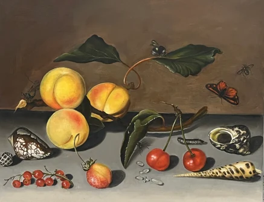
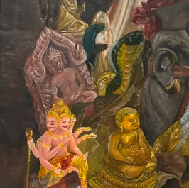
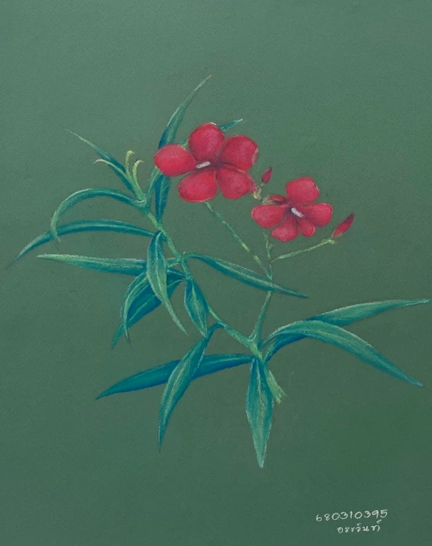
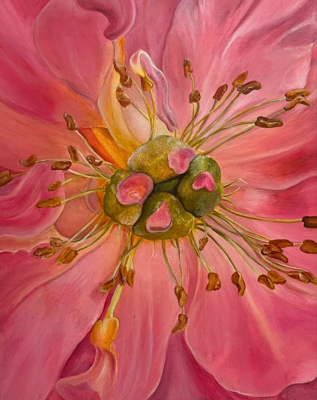

Reproduction a still life with apricots, cherries, a wild strawberry, red currants, shells and insects
Oil on canvas
ภาพนิ่งแสดงลูกแอพริคอท เชอร์รี่ สตรอว์เบอร์รีป่า ลูกเกดแดง เปลือกหอย และแมลงต่างๆ บนหิ้งหิน ของ Balthasar van der ast

Oil on canvas
ภาพนิ่งแสดงลูกแอพริคอท เชอร์รี่ สตรอว์เบอร์รีป่า ลูกเกดแดง เปลือกหอย และแมลงต่างๆ บนหิ้งหิน ของ Balthasar van der ast

Oil on canvas
การวาดนอกสถานที่ ณ วัดเจ็ดยอด ด้วยเทคนิคสีน้ำมันในมุมที่มีพระพุทธรูปวางเรียงกันอย่างสวยงาม

Chalk on Card paper
การจับภาพดอกไม้ในธรรมชาติ และใช้การผสมกันของสีฝุ่นเพื่อสร้างมิติให้ดอกไม้ออกมามีชีวิตชีวา

Acrylic on canvas
การวาดแบบซูมไปที่เกสรอันเล็ก ที่ปกติแล้วเราแทบจะไม่ได้มองไปที่มันแบบใกล้ๆ เพราะเรามัวแต่หลงไหลกับความสวยงามเพียงแค่ผิวเผิน